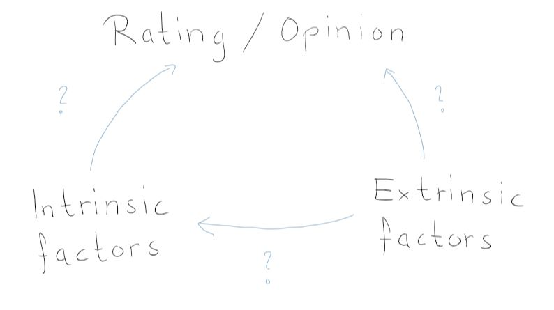

When you’re asked to rate a beer, it might seem like a trivial task: if you like it you give it a good rating and if you don’t you give it a bad rating, simple right? But how you rate a beer can be affected by a plethora of factors that you are not necessarily aware of. Have you ever stopped and wondered what factors can influence your rating of a particular brew? Have you thought about which of your senses are most stimulated when you like a beer? Or that perhaps your culture and environment have shaped your opinion about a beer? In this project, we will delve into the world of beer appreciation and examine both intrinsic and extrinsic factors that can impact how one rates/reviews a beer. We do so by using data from two beer rating websites: RateBeer and BeerAdvocate. We first look into which senses affect most one’s overall perception of a beer. Next, we look into how your location and culture can affect your preference of a beer geographically and in what way. Finally, we look into how your environment, in the form of major events affecting your country, can have an impact on how you review a beer. So grab a pint, sit back, and join us as we delve into the world of beer ratings!
Brew-havior: Uncovering the factors that shape our beer preferences
EXPLORE OUR DATA STORY
One would think that only taste is decisive for a beer evaluation. But is this true?
Throughout our data story we will investigate how important other sensory features are and how they
are influenced by external factors like culture.
Moreover, we want to find out if our opinion may be influenced by environmental factors like
the economy.
Join us on a malty journey to the definition of a good beer.
Does your location and/or culture affect your beer rating?
Here, we wanted to investigate whether there is some sort of location bias to how you rate a beer. In other words, do we tend to rate beers better because they are local (brewed in the same country or state for the United States). To do so we started by looking at the relative proportions for very well reviewed beers (defined here as having a rating > 4 out of 5) of users having the same location as the brewery country (or state for the United States) versus users who do not have the same location as the brewery:
So at first glance, we observe that for most of these countries the beers rated higher than 4 are brewed out of their own country except for the United States, Belgium, Germany and England.
The above plots show clearly more often than not that people tend to rate well beers that haven’t been brewed in their countries/states. However, this is not enough to conclude that there is a bias or not. Maybe two beers brewed in two completely different locations are similar in the style they are brewed making people from a certain region like a lot those same two beers. So we wanted to define a more precise measure of bias rather than using user locations and brewery locations. An element of a beer that gives us a much better idea of culture is the style of Beer/brewing. For example, a person who has grown up in a region with a strong tradition of brewing a particular style of beer, such as lagers or ales, may be more familiar and inclined to rate those styles more favorably. Similarly, a person who has had limited exposure to a particular style of beer may be less familiar with it and therefore less able to accurately rate it. In order to capture this idea and see if people from a same region are more inclined to rate like the same beers, we define a cultural stamp per country. Essentially, it’s a vector defined per country where each beer style has a weight associated to it. The higher the weight, the more a country likes that particular style. We next perform K-means clustering on those vectors in order to see if some regions cluster together for their style preferences:
We identify 4 major clusters:
- Cluster 7 corresponds to mostly European countries (including Germany, Denmark, France, Switzerland etc.) and other countries around the world that do not cluster in a specific way.
- Cluster 4 contains most states from the United States.
- Cluster 10 contains a lot of south American countries.
- Cluster 6 contains states from the east coast of the United States.
So indeed, we see that depending on the region where you are located, you will probably have a bias towards a certain style of beer/brewing. Let’s see what users form these respective cluster regions have to say about their favorite styles of beer:
Intrinsic Factors in Beer Preferences: Insights from User Reviews and Ratings:
We’ll look how some regions/clusters perceive their most liked type of beer. We’ll do so by getting most frequent words in the comments. We separated the latter into two groups: very well reviewed (>4 out of 5) and poorly reviewed beers’ comments (<2 out of 5).
3 of our 4 clusters have a preference for IPA. These are known for their hoppy, bitter flavor and
aroma, which is achieved by using large amounts of hops during the brewing process. Cluster 6 has a
preference for a subtype called American IPA, not surprising that it corresponds to the east coast
of the US.
In the following graphs, we chose to show the most frequent words for cluster 7,
which most likely represent Europe. They correspond to very well and poorly reviewed beers,
respectively.
You can read many words describing diverse flavors.
Negative terms appear more often. Light and sweet might not come as negative at first. But for this variety of style it seems to be the case. Just by looking at those graphs, guessing the type isn’t so hard. We find the essence of an IPA: bitter, hop, fruity, ...
Only one group stands out by having a strong preference for Pale Lager. Those are light, crisp beers
with low to medium hop bitterness and subtle malt flavors, often served chilled and popular as a
refreshing drink. Most countries in this group stand in South America.
The following graphs show the most common words for cluster 10.. They, again, correspond to
very well and poorly reviewed beers, respectively.
Not as diverse as the IPA above, but we should note that high carbonation is a must for this type.
Watery, corn, boring and metallic are obvious characteristics that do not make for a high-quality drink.
The presence of certain terms in reviews seems to be closely tied to the perceived taste of the drink. We’ll check that hypothesis by correlating the rating of each feature of our dataset to the overall rating. These are the following: appearance, aroma, palate taste. This correlation test has been computed on the whole dataset, not only clusters.
Taste has the highest R-value. Other factors, such as aroma, appearance, and palate, can also contribute to our perception of a beer, but ultimately it is the taste itself that determines whether we find a beer pleasing or not.
How Economics influence our opinion on beer: An analysis of the financial crisis of 2007/2008:
Since a good part of the data was in the US (58%), our last part consists of analyzing how external major events in your country might influence how you review a beer. To that end we focused on one of the most significant economic events in recent US history: the 2007-2008 financial crisis. During time of economic uncertainty, consumers may be more cautious of their spending which can in turn affect how they review a beer. This example was chosen to highlight how an extrinsic factor such as an economy or politics can affect the way people review beers. We have the hypothesis that in times of crisis, the drop in incomes leads to a higher weighting of the factor price. We assume that a factor with higher importance will be mentioned more often. So if the importance of the feature price varies over time we should observe a higher or lower frequency in the text reviews.
From the 5.7 million reviews, 240'000 mention at least one price related word. The figure below shows the total number of monthly reviews, the count of monthly reviews mentioning at least one price related word or both. Note that the y-axis is logarithmic and not linear.
To be able to compare different month, we need the relative amount of price related reviews (Given in percentage of the total number of reviews). On the visualization below you can see the fraction of PMR as bar-plot, graph or interpolation. In green you can see when the fraction is increasing over time, in red the periods when the occurence decreases.
The first signs of the financial crisis appeared in the beginning of 2007. However, apparently
these signs were not sufficient to increase the weight of the factor price.
We can see that the price related words start increasing around September 2008.
This is the time when the bank "Lehman Brother" announced their bankruptcy and the crisis
spread around the world.
Interestingly, after the "officially recognized" end of the crisis with the economic stimulation
package in February 2009, it took two more years until the weight of price in beer reviews started
to decrease again.
Note that the effect size is quite low. From 4% of reviews mentioning price in 2008 the value
rises to 5% in 2011. So, even though significant, the change is quite small.
We used Chi-Square testing to see for which time intervals the change in occurence of price related
reviews is statistically significant.
In the graph below the intervals with statistically significant changes highlighted in green.
The results show that there are periods with statistical significant changes, but these periods are rather sparse. Interestingly, from 2008 until 2015 the changes are almost continously significant.
Crisis is a pretty abstract term. So, we decided to compare our results with a more tangible
factor, the unemployment (information about the data in footer).
The graph below shows both the evolution of the ratio of price related reviews and the evolution
of unemployment in the US.
In the upper half of the figure, green represents an increase in unemployment over time, while
red stands for a decrease.
Following the same color code, in the lower half, increase and decrease of occurrence of price related
reviews is depicted.
We saw before that the time period of constant statistically significant changes is from 2008
to 2015. So we will focus the analysis on this period of time.
We can see that the tendency in change of price related reviews follows the tendency of the
unemployment rate with approximately one year delay.
So, most likely there is a correlation between the two factors which intuitively makes sense.
When people lose their jobs they are more concerned about the price of the products they consume.
This delay could be due to unemployment insurance or due to financial reserves.
As we only observe correlation and not causality, it is also possible that both events occur due
to another factor that causes unemployment at some point and a higher weighting of price for beers
at another point in time.
Conclusion:
Little surprising is the result that taste is the most important sensory factor. But also, palate
and aroma are very important, although one can say that they are quite connected to taste. The
appearance has very little influence.
Our hypothesis that different cultural clusters could weight different sensory features in distinct
manners could not be shown with our approach. The weighting of the sensory factors was very similar
for all the investigated groups.
However, the external factor economy seems to correlate with factors that influence the rating of
beers. During the crisis price related words were mentioned more often in text reviews, which may
indicate a higher importance of the factor price during that period.
We have seen that there is a lot of theory around beer, but let's be honest, nothing beats practice.
So, prost to a project full of flavour and fun!
Beer DataSet
The Beer DataSet that we used for our analysis contains users reviews on beer from two rating platforms: BeerAdvocate and RateBeer. The set contains over 10 Million reviews between 1996 to 2017. Available information are: beer name, style, brewery name, alcohol content, date of review, username of reviewer, a text-review (if given by user), a score for each of five categories (appearance, aroma, palate, taste, overall). Moreover, there is information about the country of origin of the user and the breweries.
Unemployment DataSet
The unemployment dataset was obtained on kaggle and contains the monthly unemployment rate from 1948-2021. None of the data is seasonally adjusted. This file also contains information on subsets of the population, including based on age ranges from 16-55 and over, and unemployment rates for men and women. This data is collected by the US Bureau of Labor Statistics.
References
Favicon : favicon-generator .
Beer Foam in the header:
beer foam
4170061 © Donald Swartz | Dreamstime.com
Graphics :
beer on wooden table
hops - logo
beer background
Beer Logo.
{kind=link}